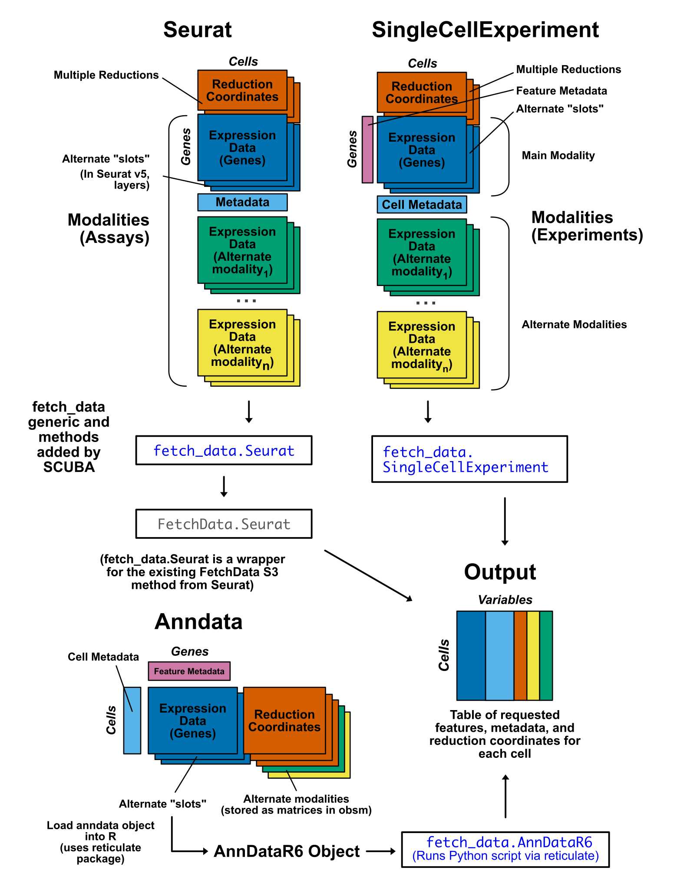

Overview
SCUBA (Single Cell Unified Back end API) is a unified data accession interface for single-cell object classes. The package streamlines R data analysis for Seurat, SingleCellExperiment, and anndata objects by providing a consistent interface for data access, exploration, and visualization.
SCUBA can be used to retrieve the following information:
- Feature expression data (genes, surface proteins, signatures, or any single-cell modality that can be expressed as a counts matrix)
- Cell metadata
- Reduction coordinates
The main function of SCUBA is fetch_data(). The workflow for fetch_data() is based on Seurat’s SeuratObject::FetchData(). We added S3 methods to replicate the FetchData workflow in SingleCellExperiment and anndata objects.
fetch_data() returns data as an R data.frame with cells as rows, and variables requested as columns. The format of the output data.frame is consistent across all three object classes, allowing for the development of downstream visualization scripts that function the same for all accepted object classes.

Supported Single-Cell Objects
SCUBA currently supports the following object classes:
Support for mudata objects will be added in the near future.
Backwards Compatability with Seurat v4
Seurat v4 objects are compatible with SCUBA. fetch_data() is a wrapper for SeuratObject::FetchData() when used with Seurat objects, so the function supports all versions of Seurat objects that Seurat currently supports. If you are using an object created with Seurat v4, the slot parameter should be used instead of layer in the event you are accessing data from the counts or the scale.data layers (if you are accessing data from the data layer, this parameter is not needed, as is the case with Seurat).
Spatial Single-Cell Modalities
SCUBA offers partial support for spatial single-cell modalities. Spatial data that is expressed as a counts matrix and stored in an assay/experiment/modality is supported by SCUBA, but spatial images are not currently supported. We will add support for spatial omics modalities in a future release.
Installation
Run the command below to install SCUBA. BiocManager is used to automatically install Bioconductor dependencies (SCUBA is not a Bioconductor package).
If you plan to use SCUBA with anndata objects, use dependencies = TRUE. If you only plan to use SCUBA with Seurat and SingleCellExperiment objects, use dependencies = FALSE.
if (!require("BiocManager", quietly = TRUE))
install.packages("BiocManager")
# Set dependencies to FALSE if you do not plan to use anndata objects
BiocManager::install("amc-heme/SCUBA", dependencies = TRUE)Additional Installation for anndata Objects
Note
As of SCUBA version 1.2.0, Python package management is now handled automatically by SCUBA. The steps in this section are no longer necessary. Simply call library(SCUBA) and load your anndata object in R, and SCUBA will be ready to use!
To use SCUBA with anndata objects, you will need a Python installation and the reticulate R package. If you are using anndata objects, follow the steps below. If you are only using Seurat of SingleCellExperiment objects, you do not need to complete these steps.
First, install the reticulate package in R.
install.packages("reticulate")Next, you will need to set up a version of Python with the necessary packages installed. There are several ways to do this. We recommend the use of an Anaconda environment, which will allow you to create an environment just for use by SCUBA that does not interfere with any other installations of Python you may have. The instructions below cover setting up an environment via anaconda, but other means of setting up Python environments will work with SCUBA. All that is needed is a Python environment connected to reticulate with the dependencies below installed:
Setting up a Python Environment via Anaconda
Note
As of SCUBA version 1.2.0, Python package management is now handled automatically by SCUBA. The steps in this section are no longer necessary. Simply call library(SCUBA) and load your anndata object in R, and SCUBA will be ready to use!
To set up an Anaconda environment with the requisite packages for SCUBA, follow the steps below:
Download an Anaconda Distribution. Use whichever installer is most appropriate for your operating system and preferences.
For MacOS and linux users: open a terminal window. For Windows users, you can open the Anaconda command prompt application (cmd.exe). Subsequent steps are the same for all operating systems.
In the termainal, create a new conda environment for use with SCUBA.
- Next, “Activate” the environment to switch to it in the terminal.
You should now see “(SCUBA_anndata)” to the left side of your cursor in the terminal.
- Next, install the anndata package according to the instructions from their website. Make sure to specify the channel with
-cto install the most recent version.
- SCUBA requires the following additional packages: scipy, numpy, and pandas. These should have been installed as dependencies when installing anndata. To verify these packages are present, you can run
conda liston the environment:
conda list -n SCUBA_anndata pandas
conda list -n SCUBA_anndata scipy
conda list -n SCUBA_anndata numpyIf the package is present, you will see information for the package.
#
# Name Version Build Channel
pandas 2.2.3 py313h668b085_3 conda-forge
If it is not present, the list of information returned will have no rows. In this case, you can install the package via conda install.
# Name Version Build Channel- Connect reticulate to the conda environment. To do this, run the following in an R console:
reticulate::use_condaenv("SCUBA_anndata")Step 7 will need to be repeated each time you restart your R session. If you are using RStudio, you may set a default Python environment to use with reticulate to avoid having to repeat this step each time. To do this in RStudio, complete the following:
- Go to “Tools” > “Global Options”.
- In the window that appears, select “Python”.
- Select the “Select” button next to the Python interpreter displayed.
- In the window that appears, select “Conda Environments”.
- Select the path of your Conda environment (the path containing “SCUBA_Anndata” in this case).
Additional Infomration
Please see our website for a user guide and more information.
Citation
Showers, W.M., Desai, J., Engel, K.L., Smith, C., Jordan, C.T. and Gillen, A.E. (2024) SCUBA implements a storage format-agnostic API for single-cell data access in R. 10.12688/f1000research.154675.1.